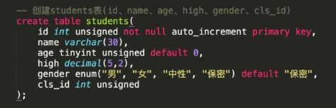

- 显示
显示时间：select now();
显示版本：select version();
- 创建
创建数据库：create database 数据库名; 默认编码为：latin
指定编码创建：create database 数据库名 charset=utf8;
查看创建数据库的语句：show create database 数据库名；
- 删除
drop database `数据库名`;
数据表的操作（在一个数据库中）
查看所有数据库：show databases;
进入一个数据库：use 数据库名;
查看当前的数据库：select database();
查看当前数据库所有的表：show tables;
创建表：create table 表名(id int, name vaechar(30) );
创建表（加约束条件）：create table 表名(id int primary key not null auto_increment, name vaechar(30) );
查看表结构：desc 表名;
例：


查看有没有插入成功：

数据的增删改查
增
添加一个数据：insert into 表名(列1...) values(值1, ...) ;
给特定字段插值：insert into 表名（name, gender） values("xiaoming" , 22) ;
多行插入：insert into 表名（name, gender） values("xiaoming" , 22),("xiaohong" , 33) ;
- 对于自动增长的键，可以用0，default, null来占位
- 对于枚举enum，可以用序号（1,2,3,4等）来填写
改
添加一个字段：alter table 表名 add birthday datatime ;
删除一个字段：alter table 表名 drop high（列名）;
修改类型： alter table 表名 modify birthday data ;
修改字段（重命名）：alter table 表名 change birthday birth data default "1900-01-01"
修改：updata 表名 set 列1=值1, 列2=值2... where id=3；
删
删除一个字段：alter table 表名 drop high（列名）;
删除表：drop table 表名;
删除数据库：drop database 数据库;
- 物理删除（真的删除）
删除表：delete from 表名；
按行删：delete from 表名 where name="xiaoming"；
- 逻辑删除
——用一个字段来表示，这条信息是否已经不能再使用了
——给表添加一个is_delete字段 bit 类型
alter table 表名 add is_delete bit default 0；
updata 表名 set is_delete=1 where id=6；
查
查看创建的表：show create table 表名;
查看表结构：desc 表名
查看表：select * from 表名;
按条件查询：select * from 表名 where name="xiaoming" ; or iwhere id<9
按指定列查询：select name, gender from students;
select students.name from students;
可以使用as为列或表指定别名：select name as 姓名, gender as 性别 from 表名
可以改变顺序：select id as 序号, gender as 性别，name as 姓名，from 表名
消除重复行：select distinct gender from 表名； --消除重复的gender